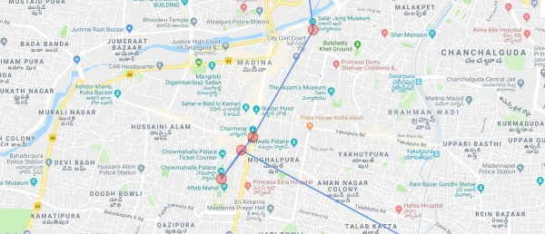
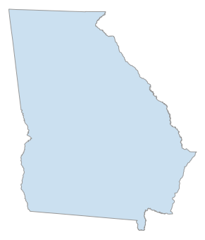
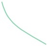
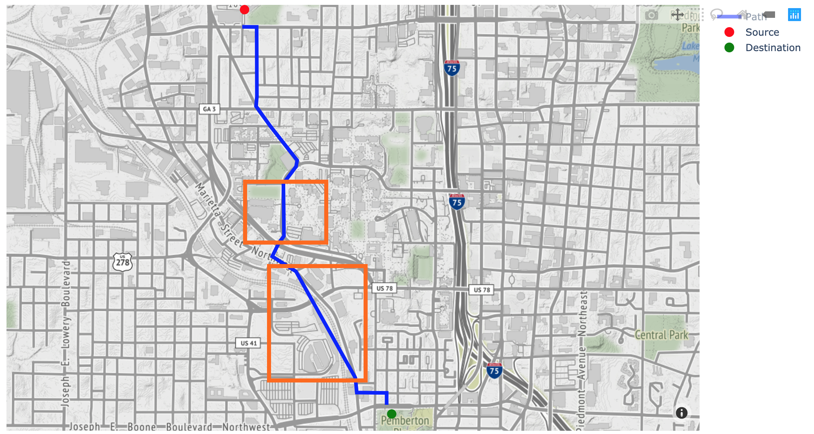
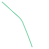
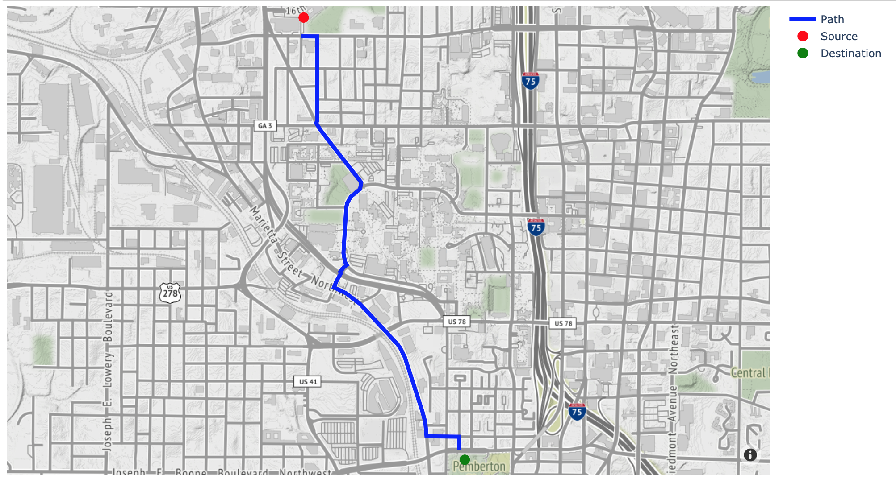

Find and plot your optimal path using NetworkX, Plotly and OSMnx in python
There are many libraries that you can use to plot a path using Google Maps API, but this leads to reduced flexibility. To draw a path, you will need to draw a set of lines which, in lack of better words, doesn’t look good. Let me give you an example:
Also, on many occasions, you may want some flexibility to not only change the desired path between two points (for example, instead of the shortest or fastest path given by google maps you want the path which satisfies your criteria) but also how you want to plot.
In this blog, I took an attempt to solve such a problem where not only we will find the optimal path but also plot them using Plotly. Let’s first start with importing some libraries.
import osmnx as ox
import networkx as nx
import plotly.graph_objects as go
import numpy as npThe OSMnx package helps you to retrieve, analyze, and visualize street networks from OpenStreetMap. You can read more about OSMnx here. To demonstrate I will download the state boundary of Georgia, US and plot it using the OSMnx package.
state = ox.gdf_from_place('Georgia, US')
ox.plot_shape(ox.project_gdf(state))

Now let’s download a map. This time we will download a more detailed map of area surrounding Georgia Tech by providing argument network_type = 'drive'. OSMnx downloads the map as a graph object which can easily be used by the NetworkX package.
# Defining the map boundaries
north, east, south, west = 33.798, -84.378, 33.763, -84.422
# Downloading the map as a graph object
G = ox.graph_from_bbox(north, south, east, west, network_type = 'drive')
# Plotting the map graph
ox.plot_graph(G)

In above graph we can see the all the nodes (blue) and edges (gray) representing the roads with exact shapes. Let’s take a deep-dive into the graph object we downloaded and see how the edges and nodes look likes:
# Displaying the 3rd node
list(G.nodes(data=True))[2]
(69128194,
{'y': 33.7692046,
'x': -84.390567,
'osmid': 69128194,
'ref': '249C',
'highway': 'motorway_junction'})
Above output shows the information of node id 69128194 with its x and y coordinates, OSM id, and type of node (a junction). Similarly, we can see the details of edges:
# Displaying the 8th edge
list(G.edges(data=True))[1]
(69259268,
69508853,
{'osmid': 9270483,
'name': 'Lindsay Street Northwest',
'highway': 'residential',
'oneway': False,
'length': 145.352,
'geometry': })
This shows the details of the edge connecting node 69259264 to 69290452 along with its OSM id, name, type, oneway/twoway, length and one interesting element of type geometry.linestring. We can see how this geometry looks like.
# Displaying the shape of edge using the geometry
list(G.edges(data=True))[1][2]['geometry']

This shows that the edge is not a straight line but a curved path. We will use this information later while plotting this type of curved edges.
Now we will find the optimal path. For now, lets set our objective as to find the path with the smallest length. This can be changed to satisfy any criteria and will be covered in a separate blog. After deciding an origin and destination, first, we will need to get the closest nodes from these locations. This can be done using the function get_nearest_node
# define origin and desination locations
origin_point = (33.787201, -84.405076)
destination_point = (33.764135, -84.394980)
# get the nearest nodes to the locations
origin_node = ox.get_nearest_node(G, origin_point)
destination_node = ox.get_nearest_node(G, destination_point)
# printing the closest node id to origin and destination points
origin_node, destination_node
(69425048, 2919090915)
Now, we can use the shortest_path function from the NetworkX library to get the optimal path which minimizes the total length using the Dijkstra's algorithm. Notice that we have provided weight=”length”. This function returns a list of ordered nodes in the path.
# Finding the optimal path
route = nx.shortest_path(G, origin_node, destination_node, weight = 'length')
route
[69425048,
69425021,
69466983,
69466977,
69238386,
.
.
.
Let’s plot these nodes on a map. We will use the Plotly library for this. We will plot all these nodes and connect them with lines to represent a path. Let’s see how it looks. But first, let's get the co-ordinates of these nodes
# getting coordinates of the nodes
# we will store the longitudes and latitudes in following list
long = []
lat = []
for i in route:
point = G.nodes[i]
long.append(point['x'])
lat.append(point['y'])
We will plot the path on a map multiple times so let’s define a function for this:
def plot_path(lat, long, origin_point, destination_point):
# adding the lines joining the nodes
fig = go.Figure(go.Scattermapbox(
name = "Path",
mode = "lines",
lon = long,
lat = lat,
marker = {'size': 10},
line = dict(width = 4.5, color = 'blue')))
# adding source marker
fig.add_trace(go.Scattermapbox(
name = "Source",
mode = "markers",
lon = [origin_point[1]],
lat = [origin_point[0]],
marker = {'size': 12, 'color':"red"}))
# adding destination marker
fig.add_trace(go.Scattermapbox(
name = "Destination",
mode = "markers",
lon = [destination_point[1]],
lat = [destination_point[0]],
marker = {'size': 12, 'color':'green'}))
# getting center for plots:
lat_center = np.mean(lat)
long_center = np.mean(long)
# defining the layout using mapbox_style
fig.update_layout(mapbox_style="stamen-terrain", mapbox_center_lat = 30, mapbox_center_lon=-80)
fig.update_layout(margin={"r":0,"t":0,"l":0,"b":0},
mapbox = {
'center': {'lat': lat_center, 'lon': long_center},
'zoom': 13})
fig.show()
Let's call the function and plot the path on the map:
plot_path(lat, long, origin_point, destination_point)

This looks good. We have plotted a path from the source node to the destination node, and these nodes are very close to the actual co-ordinates we provided as the source and destination (shown in red and green markers respectively). But something is missing. Yes, the curves on road are replaced by straight lines joining the two nodes in the path. This can be observed in the orange boxes (Note that these orange boxes have been added later and not generated by the code). If you remember the geometry element of the edges from above, we will use that to solve this issue.
To illustrate we will see the edge shape of this portion of the path. This path is between the 6th and 7th nodes in out route variable. Let’s get the edge connecting these two nodes and we will see its shape.
# Getting the start and end node of this part
start_node=route[-7]
end_node=route[-6]
# Getting the edge connecting these nodes and storing it as a list in z to maintain the data structure of G.edges
z = []
for i in list(G.edges(data=True)):
if (i[0]==start_node) & (i[1]==end_node):
z.append(i)
z[0][2]['geometry']

This looks exactly like the street inside the second orange box. So now we have a way to get these curved shapes to plot. We just have to get these shapes and replace them with our original route data. For this we will define a funtion which does exactly this. It loops over all the edges and if a curved shape is present for that edge, it stores that curve.
def node_list_to_path(G, node_list):
"""
Given a list of nodes, return a list of lines that together follow the path
defined by the list of nodes.
Parameters
----------
G : networkx multidigraph
route : list
the route as a list of nodes
Returns
-------
lines : list of lines given as pairs ( (x_start, y_start), (x_stop, y_stop) )
"""
edge_nodes = list(zip(node_list[:-1], node_list[1:]))
lines = []
for u, v in edge_nodes:
# if there are parallel edges, select the shortest in length
data = min(G.get_edge_data(u, v).values(), key=lambda x: x['length'])
# if it has a geometry attribute (ie, a list of line segments)
if 'geometry' in data:
# add them to the list of lines to plot
xs, ys = data['geometry'].xy
lines.append(list(zip(xs, ys)))
else:
# if it doesn't have a geometry attribute, the edge is a straight
# line from node to node
x1 = G.nodes[u]['x']
y1 = G.nodes[u]['y']
x2 = G.nodes[v]['x']
y2 = G.nodes[v]['y']
line = [(x1, y1), (x2, y2)]
lines.append(line)
return lines
# getting the list of coordinates from the path (which is a list of nodes)
lines = node_list_to_path(G, route)
long2 = []
lat2 = []
for i in range(len(lines)):
z = list(lines[i])
l1 = list(list(zip(*z))[0])
l2 = list(list(zip(*z))[1])
for j in range(len(l1)):
long2.append(l1[j])
lat2.append(l2[j])
If we compare the length of lat and lat2 we will notice that lat2 has more than 6 times more co-ordinates as compared to the lat.
print("Length of lat: ", len(lat))
print("Length of lat2: ", len(lat2))
Length of lat: 23
Length of lat2: 141
The last thing to do now is to plot the path and see how it looks.
plot_path(lat2, long2, origin_point, destination_point)
This looks much better. In this blog, we used libraries like OSMnx and Plotly to create our direction map. We used NetworkX to get the most optimal path based on our objective. Here we have used the most common objective – length, but this can be easily replaced and will be shown in the next blog.